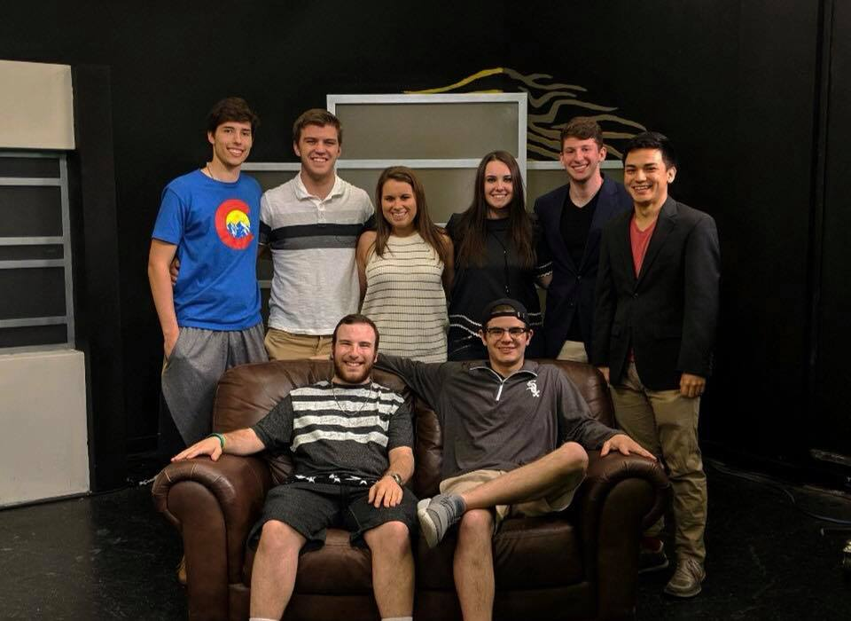
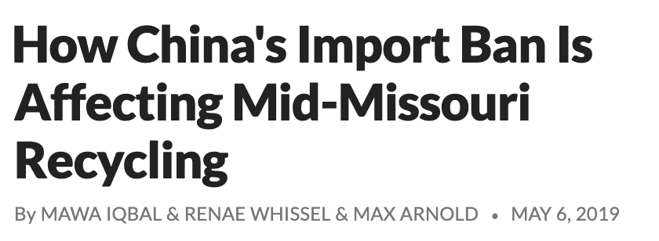

About Me
I'm a visual storyteller and content creator from Bartlett, Illinois. As a senior at the University of Missouri, I study Journalism with an emphasis on multimedia producing.

When I was in high school, I worked for four summers as a paid intern for the Chicago Bandits, four-time women's National Pro Fastpitch champions. At this internship, I worked with Chicago Bandits staff and other high school students to produce a live stream for the softball team. I rotated among several production roles: director, graphic designer and camera operator. Through this experience, I became fascinated with the world of visual storytelling.
When I came to the University of Missouri, I was interested in all the aspects of visual journalism. Naturally, I chose to specialize in multimedia producing and explored opportunities to gain more experience. In my first couple of years at the university, I was an active member of MUTV sports. I covered major university sporting events, produced videos and co-hosted a live TV show.
During my last couple of years at the university, I have worked at various newsrooms: Newsy, the Columbia Missourian, KBIA radio, KOMU 8 and Vox Magazine. I produced stories that competed with those of other news outlets and learned from my own successes and failures as a young journalist.